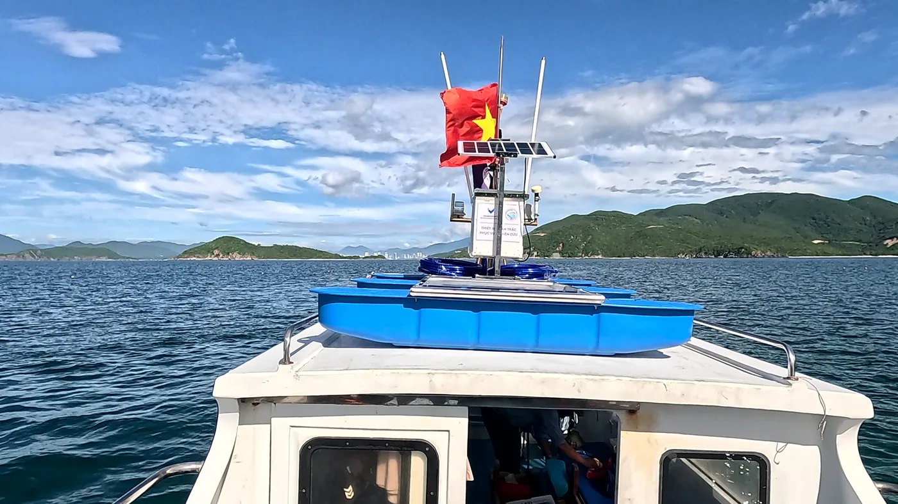
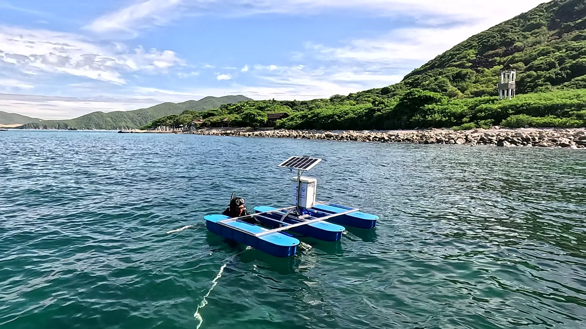
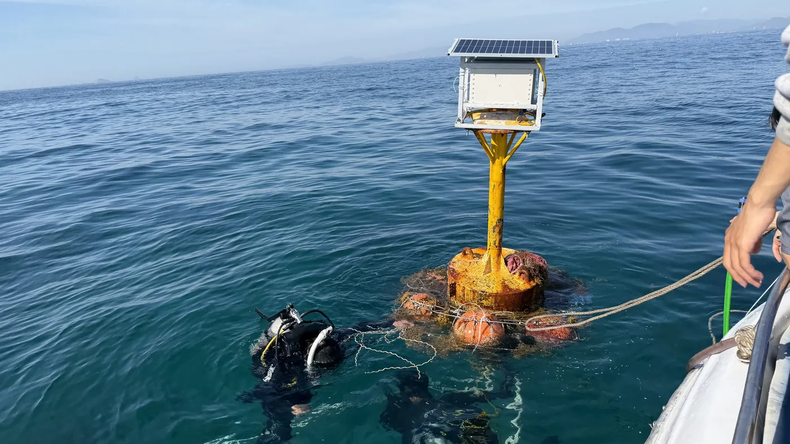
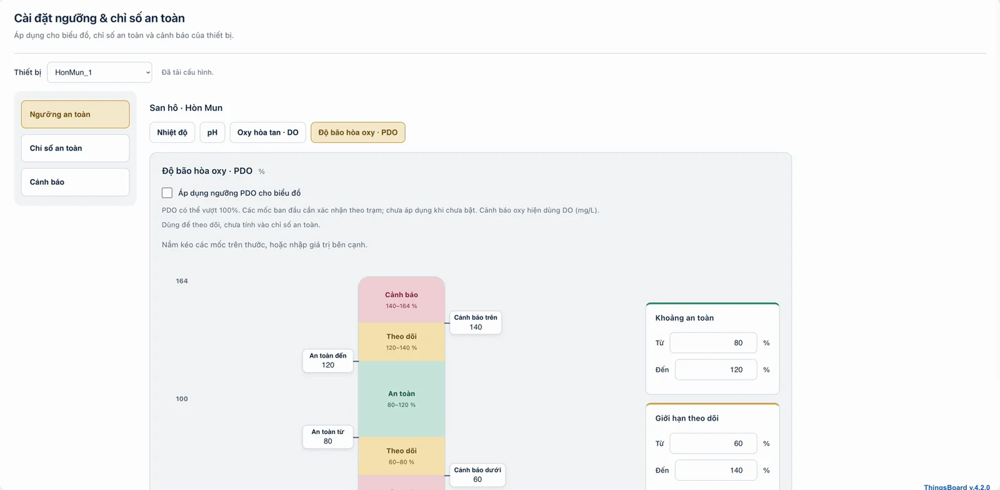
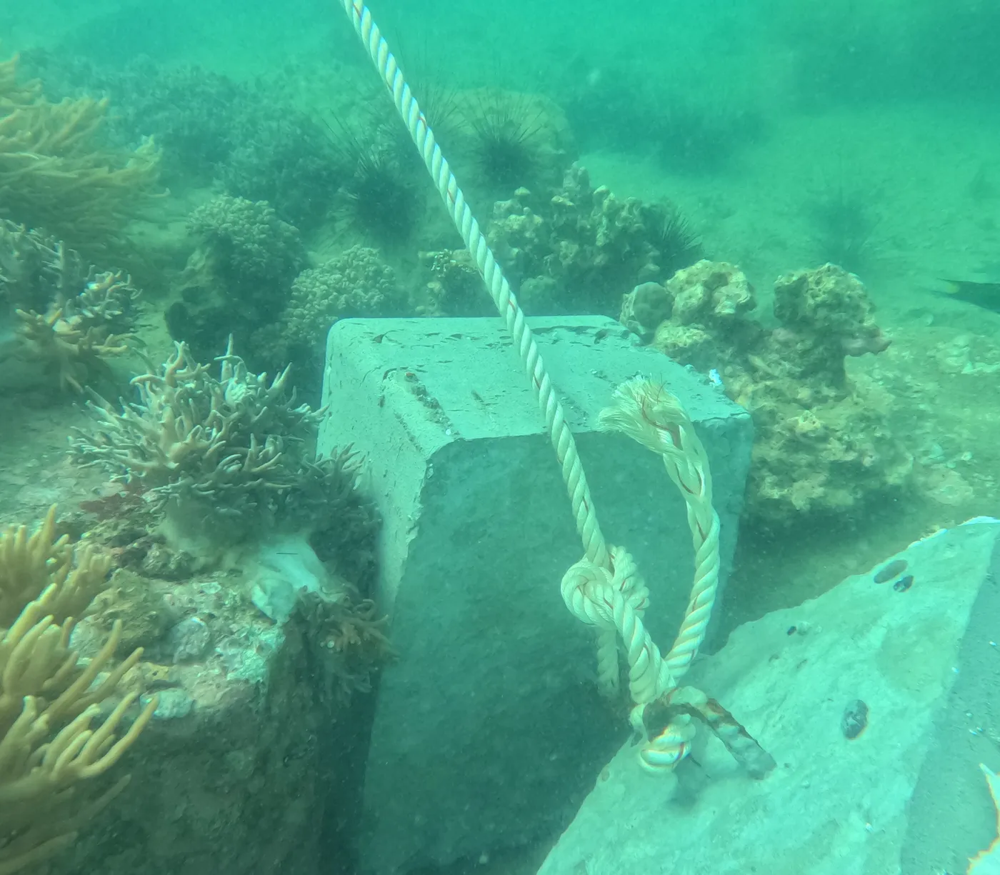
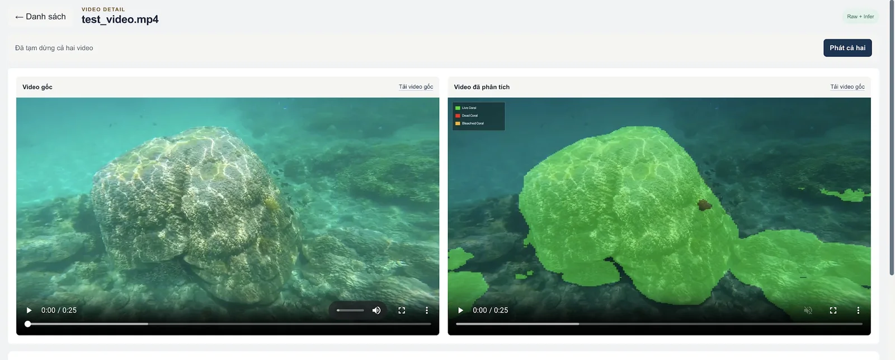

Aaron
AaronCoral reef conservation monitoring, Nha Trang Bay
A reef monitoring station and underwater image data for Nha Trang Bay
GREEN-X, VinUniversity · Nha Trang Bay Management Board · Nha Trang University

A project of GREEN-X, VinUniversity with the Nha Trang Bay Management Board and Nha Trang University, tracking the health of the reefs in Nha Trang Bay in two parts: a water-quality station placed on the reef, and underwater image and video data of the coral community. I work on both parts.
01Context and aim
Nha Trang Bay is one of Vietnam’s most biodiverse marine protected areas, yet its reefs are under pressure from rising sea temperature, coastal runoff and salinity swings. Reefs are usually assessed by periodic dive surveys; between dives, short events such as a night-time drop in dissolved oxygen, which can lead to bleaching, are easily missed.
The project aims at continuous reef monitoring in two complementary parts. The first is an automated station on the reef that logs water quality day and night (section 03). The second is underwater image and video data that records the coral community itself, to assess bleaching and build data for automated assessment models (section 04). I work on both (sections 05 and 06).
02People and partners
The project started in February 2025 and is led by Dr. Pham Huy Hieu, Dr. Phung Manh Duong and Dr. Dinh Van Dung. Pham Minh Hoang leads the engineering; Nguyen Xuan Quyen and I are research assistants. Partners:
- GREEN-X (Smart Green Transformation Center), VinUniversity: lead institution; the GREEN-X IoT team built the first station generations.
- Nha Trang Bay Management Board: agrees station locations and routes inside the protected area, so the data serves conservation work.
- Nha Trang University: marine ecologists and oceanographers advise on water-quality thresholds and key reef zones.
- Khanh Hoa Department of Finance: working sessions on deployment and coordination.
- Tep Bac: built the hardware of the latest station, installed in October 2026.
03The reef station
The station measures water quality right at the reef and sends readings continuously over mobile networks, so scientists and the Bay Management Board can follow the reef day and night and get alerts when a parameter crosses its threshold.
The station has gone through three generations. The first ones were built by the GREEN-X IoT team: the electronics and solar panel sit on top of a navigation buoy above the splash zone, and divers anchor the sensor cluster at reef depth (Figure 1; the cover shows the second generation). In October 2026 it was replaced by a new generation whose hardware was built by Tep Bac, a small floating raft carrying the solar panel and equipment box; the team carried the raft out, assembled the equipment box on the boat and lowered the station onto the reef (Figures 2 and 3). The parameter set changed too: salinity and turbidity were dropped and oxygen saturation (PDO) added; the station now measures temperature, pH, dissolved oxygen (DO) and PDO.




04Underwater image data
The station tells how the water around the reef is, but not how the coral is doing. The second part fills that gap: underwater video and photographs of coral colonies, with drone imagery of the shallow reef (Figure 4). From them, bleaching and algal cover can be assessed and datasets built for automated coral assessment.
From the survey video the team is building NTCoral, a Vietnamese coral-reef image dataset with expert-verified labels. The model that segments live, dead and bleached coral in the app was developed by other team members.

05My part at the station
I set up the virtual private network (VPN) for the station and keep it reachable for the team’s machines. I designed the station’s monitoring app on ThingsBoard (Figure 6): an overview with the station map, latest readings with a water-safety index and alert history, and settings for a separate threshold per parameter, including PDO.
On the trips of April, June, August and October 2026, I went out to the buoy with the technical team to check and repair the station (Figure 5). With the electronics on top of a buoy at sea, salt is a constant threat: once salt got into the box and the station stopped at 3 a.m.; the new-generation device ran two to three weeks before its readings began to drift. Each failure became a reason to redesign the station.



06My part in the data
On the survey dives I was the one behind the camera. The first two trips (April and June 2026) used a Chasing Gladius Mini S underwater drone, later carrying a GoPro Hero 4, but the images were not sharp enough for a dataset. From August 2026 the team switched to a GoPro Hero 13 and the images became usable (Figure 7); in early October 2026 the reefs around Hon Mot, Hon Chong, Hon Tre and Hon Mun were filmed.
The videos go into the survey data store in the app, sorted by filming day (Figure 8). Each can play alongside its segmentation for comparison (Figure 9), and they are the image source for NTCoral.




07Results so far
- The station streams readings to the app; users follow each parameter and receive alerts when thresholds are crossed.
- Three station generations, each change driven by real failures at sea such as salt in the electronics or drifting readings.
- A store of underwater survey video from several 2026 trips, playable alongside coral segmentation.
- About 2,000 images selected from the survey video for the NTCoral dataset, now being labelled with marine biologists.
08In the news
GREEN-X has reported on the project’s working sessions: with the Nha Trang Bay Management Board, 22.08.2025, with Khanh Hoa provincial departments, 16.03.2026 and with the Khanh Hoa Department of Culture, Sports and Tourism on green tourism, 18.03.2026. The project page by Pham Minh Hoang has more photos of the working sessions and deployment video: see it here.